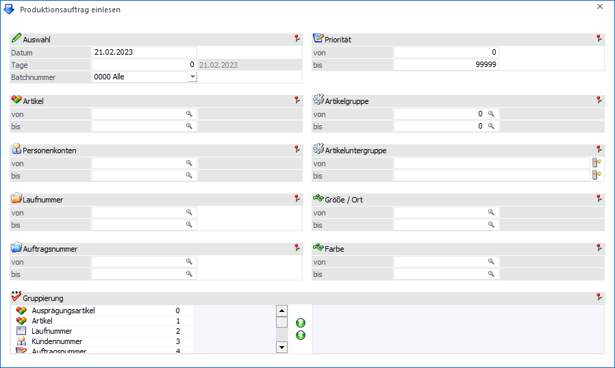
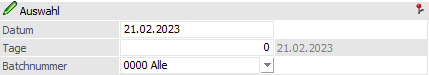
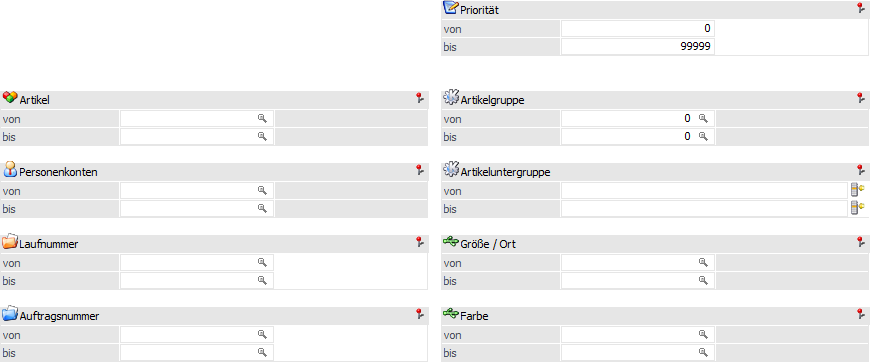
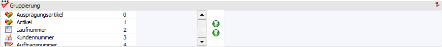
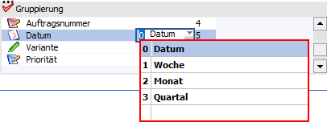

Im Produktionsauftrag einlesen kann zunächst eine Selektion und ggfs. Gruppierung auf die zu übernehmenden Produktionsaufträge vorgenommen werden.

Folgende Eingabefelder und Einstellungen stehen für die Selektion bzw. Gruppierung zur Verfügung:
Auswahl

Ø Datum/Tage
Eingabe, bis zu welchem Zeitpunkt nach offenen und noch nicht übernommenen Produktionsaufträgen gesucht werden soll.
Beispiel
Das "Datum" wird auf den 21.02.2023 eingestellt und die "Tage" auf 4. Mit dieser Einstellung würden alle Produktionsaufträge vorgeschlagen werden, welche ein Herstellungs- bzw. Lieferdatum 25.02.2023 und kleiner hinterlegt haben.
Ø Batchnummer
An dieser Stelle kann ausgewählt werden, aus welcher Batchnummer die Produktionsaufträge vorgeschlagen werden sollen.
ü 0000 - Alle
Es werden die Produktionsaufträge aus allen Batchnummern vorgeschlagen.
ü ---- - auftragsbezogene Bestellungen
Es werden die Produktionsaufträge mit auftragsbezogenen Produktionsartikel vorgeschlagen.
Hinweis
Diese Batchnummer wird automatisch gefüllt, wenn ein auftragsbezogener Produktionsartikel in einem Kundenauftrag erfasst wird, eine direkte Übergabe an die WinLine PPS allerdings dabei nicht stattfindet.
ü 000x - Batch-Nr. x (Datum: xx.xx.xxxx, User: x)
Es werden die Produktionsaufträge vorgeschlagen, welche in WinLine FAKT über "Bestellvorschlag erstellen" (WinLine FAKT - Einkauf - Bestellvorschlag - Bestellvorschlag erstellen - Register "PPS-Artikel produzieren") erzeugt wurden.
Selektion

Ø Artikel von / bis
An dieser Stelle kann auf den zu produzierenden Artikel eingegrenzt werden. Es werden nachfolgend nur die Produktionsaufträge vorgeschlagen, in welchen einer der Artikel produziert werden.
Achtung
Diese Eingrenzung bezieht sich immer auf den zu produzierenden Artikel innerhalb des Auftrags. Auf Komponenten, welche ebenfalls produziert werden müssen, kann nicht selektiert werden!
Hinweis
Wird im Feld "Artikel von / bis" z.B. nur die Nummer eines Produktionsartikels eingegeben und dieser Artikel hat auch noch Ausprägungen, so werden alle Ausprägungen automatisch mitberücksichtigt. Nur wenn während des Anklickens des Buttons "Ok" bzw. der Taste F5 die STRG-Taste gedrückt wird, wird nur der Hauptartikel alleine ausgewertet.
Ø Personenkonten von / bis
Eingabe des Bereichs von Personenkonten. Es werden nachfolgend nur die Produktionsaufträge vorgeschlagen, in welchen eines dieser Personenkonten zu finden ist.
Ø Laufnummer von / bis
Eingabe des Bereichs von Laufnummern. Es werden nachfolgend nur die Produktionsaufträge vorgeschlagen, in welchen eine dieser Laufnummern zu finden ist.
Ø Auftragsnummer von / bis
Eingabe des Bereichs von Auftragsnummern. Es werden nachfolgend nur die Produktionsaufträge vorgeschlagen, in welchen eine dieser Auftragsnummern zu finden ist.
Ø Priorität von / bis
An dieser Stelle kann auf die Priorität, welche in den Produktionsaufträgen hinterlegt ist, eingegrenzt werden.
Hinweis
Über die PPS-Parameter (WinLine Start - Parameter - Applikations-Parameter - PPS-Parameter - Parameter - Option "absteigende Priorität verwenden…") kann definiert werden, ob "0" oder "99999" die höchste zu vergebene Priorität besitzt.
Ø Artikelgruppe von / bis
Eingabe des Bereichs von Artikelgruppen. Es werden nachfolgend nur die Produktionsaufträge vorgeschlagen, in welchen eine dieser Artikelgruppen zu finden ist.
Ø Artikeluntergruppen von / bis
Eingabe des Bereichs von Auftragsnummern. Es werden nachfolgend nur die Produktionsaufträge vorgeschlagen, in welchen eine dieser Artikeluntergruppen zu finden ist.
Ø Ausprägung 1 von / bis (hier "Größe /Ort")
Zusätzlich kann eine Einschränkung auf die Ausprägung 1 vorgenommen werden. Sobald eine Einschränkung auf Ausprägung 1 vorhanden ist, wird die, unter "Artikel" eingegebene Nummer, als Hauptartikelnummer verwendet.
Beispiel
Wenn unter "Artikel von / bis" die Nummer "10007" und unter Ausprägung 1 "K" bis "E" eingegeben wird, werden alle selektierten Ausprägungsartikel des Artikels 10007 berücksichtigt.
Ø Ausprägung 2 von / bis (hier "Farbe")
Neben Ausprägung 1 kann auch eine Einschränkung auf die Ausprägung 2 vorgenommen werden. Sobald eine Einschränkung auf Ausprägung 2 vorhanden ist, wird die, unter "Artikel" eingegebene Nummer, als Hauptartikelnummer verwendet.
Beispiel
Wenn unter "Artikel von / bis" die Nummer "CZ010" und unter Ausprägung 2 "GR" bis "ROT" eingegeben wird, werden alle selektierten Ausprägungsartikel des Artikels CZ010 in der Zählliste berücksichtigt.
Gruppierung

Mit Hilfe dieses Bereichs können neue "gruppierte" Produktionsaufträge entstehen. D.h. anstatt z.B. für einen Kundenauftrag 5 separate Produktionsaufträge anzulegen, kann 1 Produktionsauftrag entstehen, welcher alle zu produzierenden Artikel enthält.
Ø Gruppierung
Mit Hilfe dieser 2 Tabellen können die Gruppierungskriterien
für den Bereich Übernahme
ausgewählt werden. Hierbei werden aus der linken Tabelle die Kriterien per
Doppelklick oder Button  in die
rechte Tabelle übergeben. Soll ein Kriterium wieder entfernt werden, so ist
dieses durch Anwahl des Buttons
in die
rechte Tabelle übergeben. Soll ein Kriterium wieder entfernt werden, so ist
dieses durch Anwahl des Buttons  möglich.
möglich.
Die folgenden Einträge stehen als Gruppierungskriterien zur Verfügung:
ü 0 - Ausprägungsartikel
Mit
Hilfe dieses Eintrags kann nach den Ausprägungsartikeln gruppiert werden.
ü 1 - Artikel
Sobald der Artikel
(d.h. die Hauptartikelnummer) in der Gruppierung enthalten ist, wird der
Produktionsauftrag für den Hauptartikel mit der Summe aller Ausprägungen
eingelesen. Der Hauptartikel wird anschließend im Produktionsauftrag gleich
aufgeteilt.
Beispiel
Im Kundenauftrag ist ein
Hauptartikel auf verschiedene Größenausprägungen aufgeteilt. Beim Einlesen ohne
Gruppierung wird ein Produktionsauftrag für jede Größenausprägung angelegt. Wenn
der Artikel als Gruppierungseintrag verwendet wird, so wird nur ein
Produktionsauftrag für den Hauptartikel angelegt, wobei der Hauptartikel
automatisch auf die Größenausprägungen aufgeteilt wird. Hierbei wird bei
auftragsbezogener Produktion die Verbindung zwischen der Belegzeile und der
aufgeteilten Ausprägung des Produktionsartikels aufrechterhalten. D.h. bei einer
(Teil)Endmeldung von einer Ausprägung des Fertigartikels wird die produzierte
Menge als Liefermenge in die entsprechende Belegzeile zurückgeschrieben.
Ist
der Artikel bei der Gruppierung nicht dabei ODER der Produktionsartikel ist ohne
Ausprägungen, dann werden alle gleichen Dispositionszeilen zu einer Zeile
zusammengefasst.
ü 4 - Auftragsnummer
Mit diesem
Eintrag kann die Disposition nach der Kundenauftragsnummer gruppiert werden.
ü 5 - Datum
Mit diesem Eintrag
kann die Disposition nach dem Datum sortiert werden. Über das Datum kann
wiederum nach "Datum", "Woche", "Monat" oder "Quartal" gruppiert werden.
Beispiel

ü 6 - Variante
Mit diesem Eintrag
kann die Disposition nach der Variante gruppiert werden.
ü 7 - Priorität
Mit diesem
Eintrag kann die Disposition nach der Priorität gruppiert werden.
Hinweis
Die Reihenfolge der Kriterien (rechte Tabelle) sind für die Gruppierung irrelevant, da immer für die Kombination aller Kriterien ein Produktionssauftrag gebildet wird.